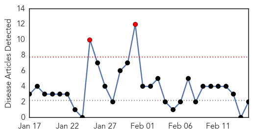
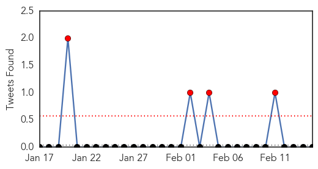
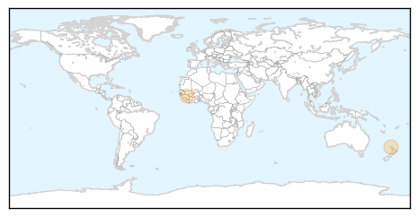
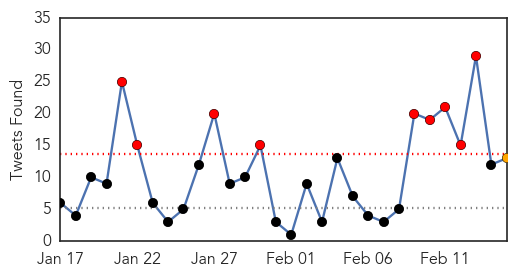
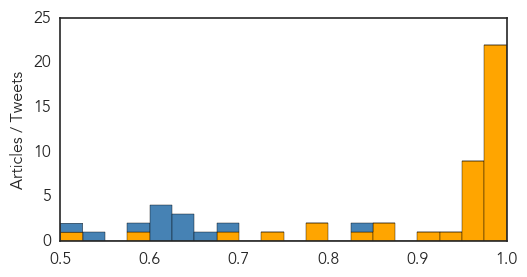

Dengue Fever
30-Day Web Trend
2 alerts, 0 warnings

30-Day Twitter Trend
4 alerts, 0 warnings

Article Locations
Article Confidences

Top Articles:
Top Tweets:
-
No tweets found for Feb 15, 2015
Ebola
30-Day Web Trend
0 alerts, 0 warnings
30-Day Twitter Trend
9 alerts, 1 warnings

Article Locations
Article Confidences
Top Articles:
- 0.999
- Utah Doctor Urges More Involvement In Ebola Outbreak
- 0.999
- Ebola quarantine was a headache for US officials
- 0.999
- West Africa sees spike in Ebola cases as decline stalls: WHO
- 0.998
- Ebola cases prompt mini-quarantine in Sierra Leone capital
- 0.998
- Ebola cases prompt mini-quarantine in Sierra Leone capital
- 0.997
- Ebola survivor brings message of understanding to Wayne State
- 0.996
- Ebola crisis: Leaders of Guinea, Sierra Leone and Liberia pledge to eradicate virus 'within 60 days'
- 0.996
- The Ebola crisis, WHO and missing funds to fight the epidemic
- 0.993
- Major Ebola drug trial cancelled
- 0.987
- S. Korean medics back to normal life after Ebola mission
- 0.986
- WHO May Lose Credibility After Ebola
- 0.986
- S. Korean medics back to normal life after Ebola mission
- 0.986
- Ebola-hit nations pledge to eradicate virus in 60 days
- 0.985
- Obama Ebola Czar Should Tackle Measles
- 0.985
- Faith bodies' engagement 'vital' for post-Ebola recovery plans
- 0.984
- Ebola nations in 60-day eradication target
- 0.983
- UN and partners seek $2 billion to help millions of people across Africa's Sahel region
- 0.982
- WHH trains Ebola Surveillance & Community Moblilzers in Goderich
- 0.980
- Gunman killed after chase linked to Ky. murders
- 0.980
- Gunman killed by Baltimore Co. police was suspect in three Kentucky killings
- 0.980
- Dying former official a focus of Maryland assisted suicide bill
- 0.980
- Police warn against leaving cars running unattended
- 0.974
- S. Korean medics back to normal life after Ebola mission
- 0.973
- Ebola-hit nations pledge to eradicate virus in 60 days
- 0.965
- Microsoft Billionaire Responds Nimbly As Ebola Epidemic Shifts
- 0.958
- Crowd Attacks Ebola Facility & Health Workers in Guinea
- 0.951
- Terrorist threat prompts German authorities to cancel Braunschweig parade
- 0.951
- Nigerian President Goodluck Jonathan asks for US help in Boko Haram fight
- 0.951
- Boko Haram Attacks Gombe, Nigeria
- 0.951
- Sierra Leone Ebola funds 'mismanaged'
- 0.951
- Sierra Leone locks down part of capital after spike in Ebola cases
- 0.945
- Ebola Transparency: Sierra Leone Leads as Liberia Falter
- 0.910
- Sierra Leone failed to account for Ebola funds
- 0.868
- Guinea Scrambles to Shut Down False Vaccination Rumor - Guinea
- 0.866
- Chinese Ambassador Zhao Yanbo Attends the Completion Ceremony of Sierra Leone-China Friendship Bio-Safety Laboratory
- 0.842
- Guinea Scrambles to Shut Down False Vaccination Rumor
- 0.794
- IMF actions worsen Ebola crisis
- 0.790
- Lövin on Ebola fact-finding mission to West Africa - Radio Sweden
- 0.732
- Traditional authorities modify cultural practices
- 0.677
- Guinea: UNMEER condemns attacks against Ebola responders in Guinea
- 0.588
- ZMapp and the fight against Ebola
- 0.507
- Crowds attack Ebola facility, health workers in Guinea
Top Tweets:
- 0.930
- Lack or Primary Care - To Ebola Outbreak in West Africa - International Medical Corps - no Mobile anything, how stop https://t.co/BZkutlIh2Y
- 0.907
- RT: Obama Ebola Czar Should Tackle Measles: The administration announced that Ebola czar Ron Klain ... http://t.co/Uj9RLpdBpj Eb…
- 0.894
- World urged not to relax in fight against Ebola - Financial Times http://t.co/QzNGIIH6V8 ebola EVD
- 0.886
- Schools to reopen in Liberia, but Ebola concerns remain - USA TODAY http://t.co/msrcNuR2Hv ebola EVD
- 0.883
- Sierra Leone Loses Track of Millions in Ebola Funds - New York Times http://t.co/qh1D3ZXjDO ebola EVD
- 0.868
- Blood transfusions show early promise as possible Ebola cure - Al Jazeera America http://t.co/oh5U8INyUI ebola EVD
- 0.867
- Fashion Against Ebola! Justin Bieber cuddles up to scantily-clad Naomi ... - Daily Mail http://t.co/a1RPEhioGw ebola EVD
- 0.841
- RT: [VOA] Ebola Quarantine in Sierra Leone Capital http://t.co/Cke4ARcryM EBOLANEWS
- 0.764
- With new Ebola cases reaching record low, UN health agency targets ending epidemic-Oximity finally https://t.co/TVNdOdeyWG
- 0.738
- RT: Ebola virus evolution tracked by genetic data http://t.co/Yoaw2tnWa3
- 0.724
- Ebola Outbreak in West Africa - Plan Canada. Needs real help: Mobile Classrooms, Clinics and Labs. Primary care? http://t.co/rKLotNKPvq
- 0.628
- RT: Sobering piece frm Dec on Ebola in West Point slum Monrovia. Community engagement was vital in stopping the disease h…
- 0.628
- No Ebola patients will be treated at Fort Monmouth, state says - http://t.co/gJHXqVkJbV http://t.co/ajYshTuoes ebola EVD
- 0.613
- The Mano River Union held a summit in Conakry today. Ebola affected nations working hard to reach zero cases. EbolaResponse
- 0.603
- Utah doctor: West Africans still need more resources to fight Ebola - http://t.co/EuKr7J7ZPC http://t.co/wm349Ac5AU ebola EVD
- 0.603
- Utah doctor: West Africans still need more resources to fight Ebola - http://t.co/EuKr7J7ZPC http://t.co/IGZzV3Ufv0 ebola EVD
- 0.603
- Utah doctor: West Africans still need more resources to fight Ebola - http://t.co/EuKr7J7ZPC http://t.co/846F8jGUxT ebola EVD
- 0.599
- Rains are coming! WHO | Sierra Leone: Increasing community engagement for Ebola on-air http://t.co/ZgSX0NxuPf
- 0.579
- At African Union Summit, Ban promises UN support to build back Ebola-hit countries - Oximity - @UNolizer https://t.co/xxP0SJkBN5
- 0.578
- How the fight against Ebola came to New York Fashion Week - Washington Post (blog) http://t.co/Gd3RRHqAFf ebola EVD
- 0.572
- Exceptional idea!! Obama Ebola Czar Should Tackle Measles http://t.co/ipTKLz80DO .. Is anyone ready for Airborne Ebola, like the measles?
- 0.504
- ElbowOutEbola News: Sierra Leone Loses Track of Millions in Ebola Funds:... http://t.co/4jGC7RzG8r